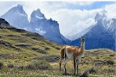
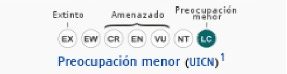
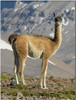
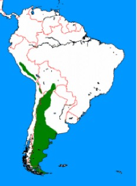

|
El guanaco (Lama guanicoe) es una especie de mamífero artiodáctilo de la familia Camelidae propia de América del Sur. Es un animal salvaje, en oposición a la llama (Lama glama) que es doméstica. Es de huesos finos, con una altura aproximada de 1,60 metros y cerca de 91 kilogramos de peso.2 Los guanacos jóvenes son llamados chulengos.3 |
Guanaco
Un guanaco en el |
|||||||||||||||||||
|
Su nombre proviene del quechua, wanaku.4 Es uno de los pocos mamíferos que pueden beber agua salada sin ningún problema.5 |
Estado de conservacion. |
|||||||||||||||||||
|

Guanaco en San Carlos, provincia de Mendoza (Argentina). |
TaxonomíaSegún la Lista Roja de la UICN se clasifica como una especie diferente, Lama guanicoe,1 con dos subespecies: Lama guanicoe cacsilensis
o «guanaco peruano» y Lama guanicoe guanicoe o «guanaco sureño».1 Mammals Species of the World las categoriza de forma provisional como
dos subespecies de Lama glama: L. g. cacsilensis y L. g. guanicoe.6
|
Taxonomia
|
||||||||||||||||||
CaracteristicasAl igual que la llama, (camélido doméstico que desciende del guanaco) el guanaco es un camélido que es incluso más escaso que la alpaca. Está revestido por un pelaje doble y grueso que lo protege. Su altura a la cruz es de 1 a 1,2 m y, si se incluye la cabeza, entre 1,8 a 1,9 m.7 Los guanacos se caracterizan por ser los animales de mayor tamaño de Chile8 y la Patagonia (exceptuando los mamíferos marinos). Su peso es típicamente el doble que el de las vicuñas, alrededor de los 100 kg, pero puede alcanzar hasta los 140 kg.El guanaco puede correr a unos 64 km/h también es un buen nadador y puede atravesar los arroyos de montañas. |
Distribucion.Distribucion del guanaco (Lama guanicoe) |
|||||||||||||||||||